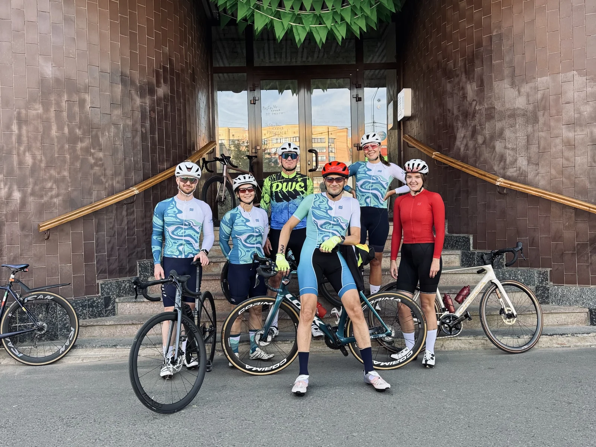

ММ 10

Ваш тренер по триатлону
и циклическим видам спорта
Выберите, с чего начнём.
Выбрать тренировку 01 / Плавание
Плыть
С водой на ты
01 / Плавание
Плыть
С водой на ты
 02 / Велосипед
Крутить
Ещё один поворот
02 / Велосипед
Крутить
Ещё один поворот
 03 / Бег
Бежать
К своему финишу
03 / Бег
Бежать
К своему финишу
Можно начать с нуля.
Можно замахнуться на большее.
Когда вода
становится своей.
Освоить технику плавания в бассейне, решиться на первый заплыв на открытой воде или подготовиться к новой дистанции. Встретимся на тренировке или разберём вашу технику по видео.
Хочу в воду
В детстве — КМС по плаванию.
Сейчас — всё та же любовь к воде.

Дорога длинная.
Компания хорошая.
За плечами — однодневные и многодневные велогонки, отбор на чемпионат мира серии Granfondo. А между стартами — поездки к морю, через перевалы и просто за кофе.


Ницца и окрестности. Сентябрь 2026 года.
Три недели жизни на велосипеде.

В своём темпе.
С моей поддержкой.
Сама бегаю дистанции от 5 до 50 километров. Помогу подготовиться к старту, поработать над техникой и найти место для тренировок в повседневной жизни.
Хочу на пробежку

«Последние 3 километра улыбалась так, что было видно из космоса»
Это мой второй чемпионат мира по триатлону и первый в серии IRONMAN. За плечами — дистанции от суперспринта до экстремального триатлона, а ещё трейлы, заплывы и свимраны.
Лично, онлайн или вместе с командой. Выберите, какая помощь нужна сейчас.
Регулярный план и поддержка
16 000 ₽ / месяц
Индивидуальный план в TrainingPeaks или Intervals: учитываю ваши цели, привычный ритм жизни и время на тренировки.
По ходу подготовки корректирую нагрузку, отвечаю на вопросы и помогаю разобраться с трудностями.
Обсудить сопровождение в Telegram
1-е место в группе М20–29 на миле SWIMSTAR.
История и видео Андрея
Бег, плавание, велосипед, прохождение транзитных зон, общая и специальная физическая подготовка. Подойдёт, если хотите поработать над техникой под руководством тренера.
Для спортсменов на сопровождении — 4000 ₽.
Договориться о тренировке в TelegramОчно или онлайн разберём технику, в том числе по видео, и подберём упражнения для самостоятельных занятий. Ещё можно обсудить трассу, тактику гонки или общий план подготовки к выбранному старту.
В такой план входят этапы подготовки, а не подробные задания на каждую тренировку. Он рассчитан на тех, кто уже знаком с микро- и макроциклами.
Обсудить консультацию в Telegram
Тренировка с моей командой: бег, велосипед и отработка транзитных зон. Летом тренируемся в Лужниках, зимой — в манеже на велотреке в Крылатском.
Узнать о ближайшей тренировке в Telegram
Очные групповые тренировки и общий план подготовки к командному старту. Формат и стоимость обсудим с учётом целей вашей команды.
Обсудить командную подготовку в Telegram
Экстремальный триатлон, велогонки и заплывы. Для тех, кто задумал что-то особенное и ищет опытного человека в команду поддержки.
Рассказать о своём старте в Telegram
Организация тренировочных сборов в России и за рубежом — индивидуально или в группе. Место, программу и стоимость обсудим с учётом ваших целей.
Обсудить сборы в Telegram
Помогаю сделать спорт частью жизни — с удовольствием от тренировок и радостью на финише.
Я сертифицированный тренер по триатлону, плаванию и бегу.
Я спортсменка-любительница. Прошла путь от первых тренировок до участия в двух чемпионатах мира по триатлону. Больше 12 лет занимаюсь циклическими видами спорта, а с 2019 года тренирую других.
В детстве выполнила норматив КМС по плаванию. Прошла профессиональную переподготовку, училась у Игоря Сысоева, Натальи Скворчевской и Юрия Сдобникова. Продолжаю учиться на семинарах и применять новые знания в работе.
Учитываю работу, семью и отдых. Составляю план с учётом вашего расписания и корректирую его, когда меняются обстоятельства. У каждого спортсмена свой план, но принцип общий: движемся постепенно, от простого к сложному.
Мне можно и нужно задавать вопросы: о подготовке, технике, выборе старта и уходе за велосипедом. Поддержка — часть нашей работы.
«Катя, спасибо! Обожаю тебя. Это всё твоя заслуга»
29:59 1-е место в группе М20–29
SWIMSTAR · 1 миля · Сириус ·
Сертификат Андрея (PDF)Limassol Triathlon · спринт · Кипр ·
«Катя, ты чё наделала?»
1-е место в группе Ж20–34 и 2-е среди женщин.
750 м плавания, 20 км велосипеда и 5 км бега.
Катя, ты чё наделала? Скажи мне, пожалуйста. Я вторая в абсолюте, первая возрастная. Я проплыла по минуте сорок восемь. Минуте сорок восемь. Я выплыла там где-то, типа, в топе. Сейчас посмотрю какая, но ребята говорят третья. Среди всех. Первая девочка. Ты чё делаешь? [Неразборчивая реплика.]
Денис Лукьянов — 1:15:01 и 5-е место в группе М20–34. Протокол Дениса
IRONSTAR 1/4 · Завидово ·
«Хотелось сделать всё в удовольствие, и действительно так и получилось»
2:17:026-е место в группе М30–34
1 км плавания, 41 км велосипеда и 10 км бега.
Протокол ВячеславаХочу тебе записать кружок, сказать большое спасибо, потому что вот я только обработал этот старт, и, ну, я честно немного в шоке от своей формы, потому что планов никаких не было. Хотелось сделать всё в удовольствие, и действительно так и получилось.
На велосипеде абсолютный азарт. На беге до каких-то, до страданий даже не дошло. В конце удалось прибавить и чувствовал себя хорошо. Наверное, можно было быстрее, но это не имело смысла, потому что цель была, как мне кажется, другая.
Но тем не менее результат офигенный, и большое тебе спасибо. Ты отличный тренер. Не знаю, что у тебя там за магия, но ты плюс связка с Hotline — это точно рабочая схема. Спасибо. [Неразборчиво.]

Ironstar 1/8 · Лужники
380 м плавания, 20,5 км велосипеда и 5 км бега.
 АлександрО подготовке и поддержке
АлександрО подготовке и поддержке«Тренировки работают, общение и поддержка — супер. Нет слов, насколько всё позитивно. Спасибо тебе!»
Хочется подвести какой-то итог году и сказать тебе спасибо. Потому что прям всё хорошо, даже с учетом моей лени и халтуры, все запланированные важные старты вполне удались. И из самого конца списка участников я уверенно переполз в середину, и даже есть удовлетворение — начало что-то получаться! Тренировки работают, общение и поддержка — супер. Нет слов, насколько всё позитивно. Спасибо тебе!
 ДенисО прогрессе в тренировках
ДенисО прогрессе в тренировках«Но в целом, конечно, силищу чувствую по сравнению с тем, что было буквально месяца 3 назад) приятное чувство))»
— Но в целом, конечно, силищу чувствую по сравнению с тем, что было буквально месяца 3 назад) приятное чувство))
— Только спросить хотела по ощущениям как тебе, стало посильнее?
— Да, сто процентов. Ну и запас какой-то всё равно чувствуется. Думал, что all out ехал, но в конце даже немного осталось сил придавить.
 ДмитрийПосле заплыва на 3 км
ДмитрийПосле заплыва на 3 км«Прошло, считаю, неплохо. Выложился я прям хорошо вчера»
Екатерина, добрый вечер! Прошло, считаю, неплохо. Выложился я прям хорошо вчера. Время 1:01, но расстояние не известно и трека нет. Не только у меня, из-за атомной станции gps видимо глушится. Часы не работали нормально. Всего 64/138, мужском зачёте 49/84. В прошлом году было 86/111, 61/67 в мужском.
Напишите, какой спорт вам интересен, как вы тренируетесь сейчас и к чему хотите прийти. Если уже выбрали старт, добавьте его название и дату.
Обсудим ваш опыт, время на тренировки и подходящий формат.